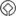

Škocjanske Jame
Škocjan Caves - Höhle von St. Kanzian
Useful Information
| Location: | Ljubljana - Koper motorway, exit Divača. Toward Koper, then left to Škocjan. 4 km from the motorway, well signposted. The entrance is at Matavun, at the road, only 400 m from Škocjan. |
| Open: |
JAN to MAR Mon-Sat 10, 13, Sun, Hol 10, 13, 15. APR to MAY daily 10, 13, 15:30. JUN to SEP daily 10, 11:30, 13, 14, 15, 16, 17. OCT daily 10, 13, 15:30. NOV to DEC Mon-Sat 10, 13, Sun, Hol 10, 13, 15. [2003] |
| Fee: |
Adults 2,000 SIT, Children (6-12) l,300 SIT, Stundents (6-12) l,300 SIT, Otroci, Dijaki (6-12) l,300 SIT.
[2003] |
| Classification: |
 Karst Cave
river cave. Karst Cave
river cave.
 Tiankeng Tiankeng
|
| Light: |
 LED LED
|
| Dimension: |
L=5,100 m. Velika Dolina (Great Doline): L=300 m, W=170 m, H=155 m. |
| Guided tours: | L=3,000 m, D=90 min, St=500. V=50,000/a [2000] |
| Photography: | allowed |
| Accessibility: | no |
| Bibliography: |
Hans Hofmann-Montanus, Ernst Felix Petritsch (1952):
Die Welt ohne Licht,
Verlag Josef Habbel, Regensburg 1952
( ) )
Hubert Trimmel (1986): Aktuelles von den Rekahöhlen bei St. Kanzian (Skocjanske jame) in Slowenien, Die Höhle 4-1986, S. 211ff. ( )
F. Müller (1891): Entdeckungsfahrten in den St. Canzianer Höhlen im Jahre 1890, Mitteilungen des D. u. Ö. A. V. 1891 ( )
Matjaz Puc (1994): Skocjanske Jame, 20 pp 5 colour photos including a reproduction of an old engraving. HTG Sezana, SKOCJANSKE JAME [published by the show cave] ( 

 ) )
|
| Address: | Park Škocjanske Jame, Škocjan 2, SI-6215 Divaca, Slovenia, Tel: +386-57-632840, +386-67-60-169, Fax: +386-57-632844. |
| As far as we know this information was accurate when it was published (see years in brackets), but may have changed since then. Please check rates and details directly with the companies in question if you need more recent info. |
|
History
| 1599 | first (unsuccessful) attempt to proof the connection to the Timavo, by throwing swimming objects into the river. |
| 1815 | first crossing through the connection between Velika Dolina and Mala Dolina by Joseph Eggenhöfner from Trieste. |
| 1819 | first path to the cave entrance. |
| 1839 | exploration of the first 300 m by Jakob Svetina from Trieste. |
| 1884 | first tourist visit. |
| 1884-1890 | exploration of the main passages by A. Hanke, J. Marinitsch and F. Müller. |
| 1904 | discovery of the side passage Tiha Jama. |
| Prior to 1918 | the caves were known as Reka Höhlen, or Dolinen, Grotten und Höhlen von Sankt Kanzian. |
| 1918 | they were called Grotti di San Xanziano. |
| 1959 | electric light. |
| 1980 | an area of 200 ha was placed under protection. |
| 1986 | enrolled into UNESCO's World Heritage List, inclined elevator at the exit built. |
| 1990 | the park was expanded to its current size. |
Description
The Škocjanske Jame (Caves of Škocjan) deserve the plural, as there are numerous caves, connected by dolines and natural bridges. All those caves were formed by the river Reka, which has its source at the foot of the highest karst peak, the Sneznik (Snow Mountain, 1,986m asl). The Reka flows on the surface, as this area is built of impermeable flysh rocks, but it enters the ground as soon as it reaches the limestone ridges near Škocjan. First it cuts an increasing gorge, then it enters a cave right below the church of Škocjan, leaves it again on the other side and flows on the ground of two adjacent dolines, which seem to be a single one. From this point this river flows more than 40 km underground.
Mayers Konversations-Lexikon, 6. Aufl., 1905.
Only some small parts of this enormous cave system are known.
The first is, of course, the cave of Škocjan, then there are among others the Abisso di Trebiciano, the Grotta di Gabrovizza and the
 Grotta Gigante.
Close to the sea are the
Grotta Gigante.
Close to the sea are the
 Sorgenti del Timavo, the Timavo Springs, which are the resurgence of the Reka.
But here the cave system is complex, having numerous levels, some below sea level.
It seems they were formed, when the sea level was lower than today.
So the Timavo has several submarine karst springs beneath its subaerial one.
Sorgenti del Timavo, the Timavo Springs, which are the resurgence of the Reka.
But here the cave system is complex, having numerous levels, some below sea level.
It seems they were formed, when the sea level was lower than today.
So the Timavo has several submarine karst springs beneath its subaerial one.
The extraordinary cave system of Reka and Timavo are most spectacular and also easy to access at the small village Škocjan. First described by Valvasor in 1689, the poor rural village became a centre of karst and cave research for centuries. The huge subterranean gorge was explored by building a path, and so soon after the exploration, visitors were able to enter it. However, it took several decades until the cave was developed to be a real show cave. And development is still going on, paths are improved and maintained continually, the bridge was renewed a few years ago, and at last the cave was inscribed into the UNESCO World Heritage List in November 1986. They are quite proud of being the only cave in Slovenia on the WHL.
The newest technical improvement of the cave is a funicular, a cable car. It brings visitors from the doline below Škocjan to the rim. Nevertheless, the tour is really strenuous: there is 4.5 km walk, starting with a walk in the hot summer sun, then more than one hour in the cool humidity of the cave. Inside the cave after a continuous descent for almost 130 m there are different ascends and descends. The last ascend, from the floor of the doline to the ticket office, is only half way done by cable car. So prepare with care, wear good walking shoes, take probably a bottle of water and some sweets with you. But do not litter the cave!
For a detailed description of a cave visit, please follow the first link on the link list below.


- See also
 Škocjanske Jama, text by Jochen Duckeck (2005).
Škocjanske Jama, text by Jochen Duckeck (2005).- Subterranean World Heritage List
 Member of the International Show Caves Association (ISCA)
Member of the International Show Caves Association (ISCA) Search Google for "Škocjanske jame"
Search Google for "Škocjanske jame" Google Earth Placemark
Google Earth Placemark Škocjan Caves - Wikipedia
Škocjan Caves - Wikipedia Park Škocjanske jame, official website.
Park Škocjanske jame, official website.- Škocjan Caves - UNESCO World Heritage Centre
- Skocjanske jame / Die Höhlen von St. Kanzian (visited: 28-JUL-2011) by Franz Lindenmayr. ()
- Park Škocjanske jame
 Index
Index Topics
Topics Hierarchical
Hierarchical Countries
Countries Maps
Maps Search
Search{kind=link}
{kind=link}
{kind=link}
{kind=link}
{kind=link}
{kind=link}
{kind=link}
{kind=link}
{kind=link}
{kind=link}
{kind=link}
{kind=link}
{kind=link}